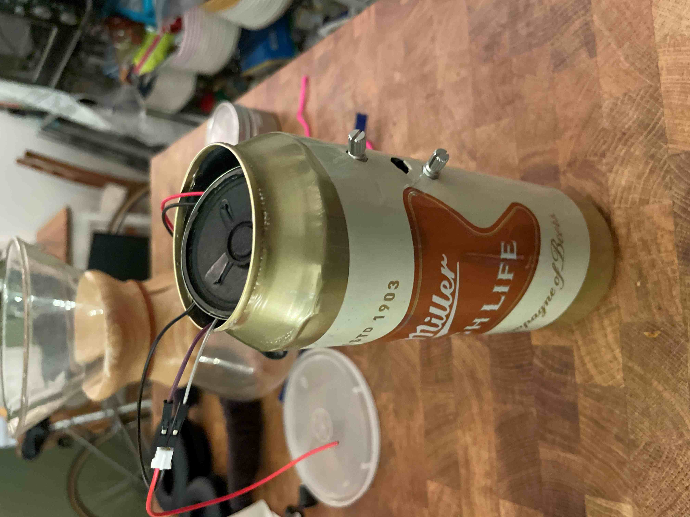

555 Timer
This is my first time working on a breadboard and it went so well! I'm pretty happy with how quickly I got the hang of it. It's very exciting to work with little circuits as it is such a weird kind of tactile learning in plugging in wires and little things.

After getting it to work with the basics, I replaced the fixed resitor with a photocell for more inputs.
From there, I soldered it onto the bus board. This is my first time soldering anything electrical (I experimented in jewelry) and had some difficulty getting it started. With some practice, I was able to get a nice, flat board by the end of it. Little components keep breaking when I try to put it in a container, so it doesn't work inside yet.
I need to fix the speaker and add some hot glue to make it secure, but otherwise I'm so happy with it!
However, this is the concept. It should be done by Wednesday.